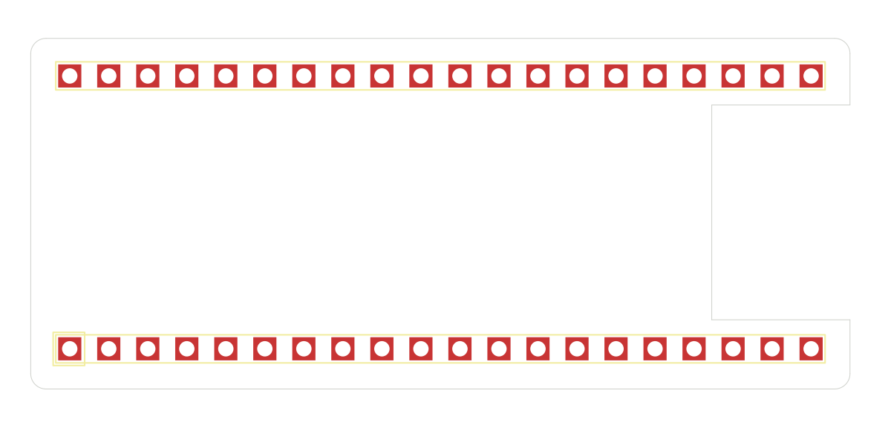

A KiCad 10 project template for Raspberry Pi Pico 2 W shields.

The schematic interface is deliberately unwired. Wire the pins your circuit uses and mark genuinely unused pins with no-connect flags. Update the PCB from the schematic, place the new components, and route the circuit.
Keep the header footprint aligned with the board notch. Choose a specific socket part and mating height before fabrication. This starter has not been physically assembled or RF tested. See README.md in the created project.
Source: WsprryPi PCB Designs. Repository license included as LICENSE.md.